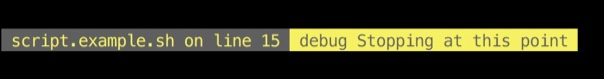
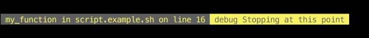
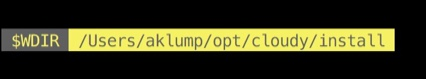
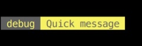
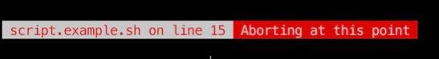

debugThis function has nothing to do with step debugging, however it gives you a consistent means to see where something happened and what a value is at a given point in the code
debug "Stopping at this point;$0;$FUNCNAME;$LINENO"
This will give you a nice output like this:

Or if called from within a function:
function my_function() {
debug "Stopping at this point;$0;$FUNCNAME;$LINENO"
}

$FUNCNAME as shown in both cases, and it will simply be ignored if irrelevent.This example shows how to create a label. By separating your message and label with a single semi-colon, you will get this type of result. Notice the $ is escaped as we want a literal dollar-sign in the label.
debug "$WDIR;\$WDIR"

This will just give you a quick message with default label:
debug "Quick message"

throwSimilar to debug, yet it stops execution immediately with an exit code of 3.
throw "Aborting at this point;$0;$FUNCNAME;$LINENO"
